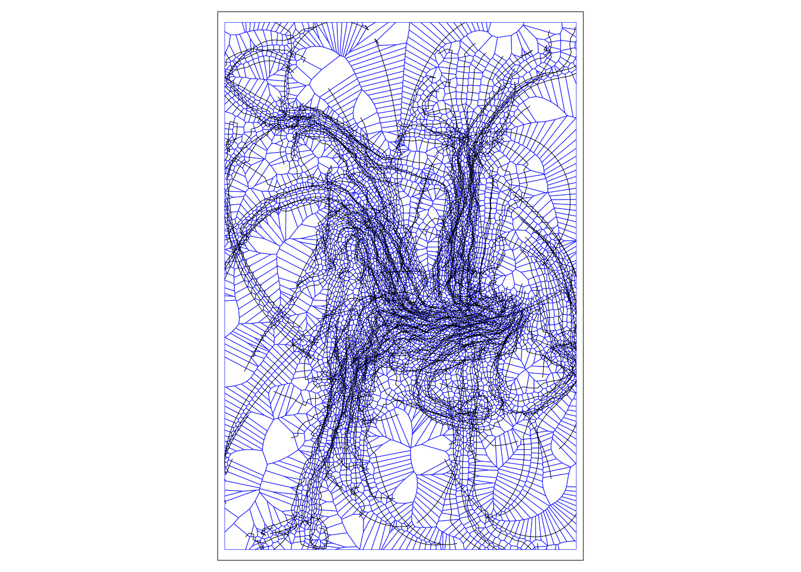
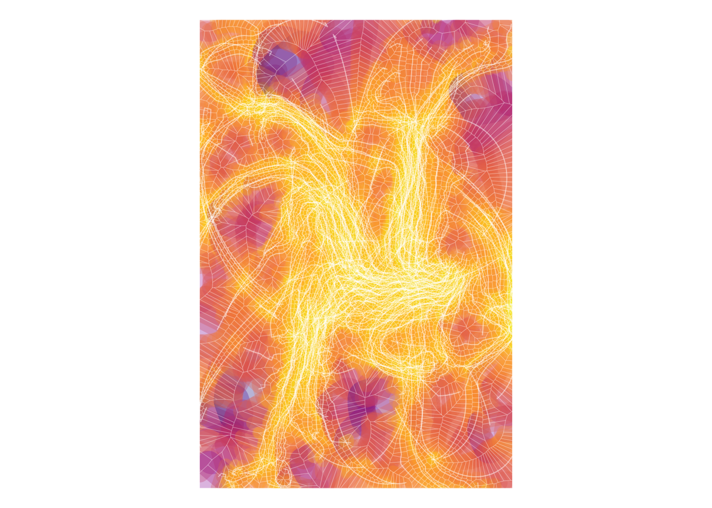

Code
library(sf)
library(tmap)
library(dplyr)
library(units)
xy <- read.table("traces.csv", sep = " ", header = TRUE)Bits and pieces that might be of interest
For now, this is just one page about how I made the cover art. In time I might expand it to cover other aspects of the book, why I wrote it, lost chapters/threads that didn’t make it, a picture of Rosa the cat, ‘how I wrote a book and still lost my job’, and so on.
But for now, here’s how I made the cover art.
The starting point was a flocking model, which is discussed in Chapter 8 of the book, in §Agent-Based Models, but also makes an appearance in Figure 7.7. This model was previously made for my earlier book Spatial Simulation written with George Perry, which you can find all about here. Specifically this NetLogo model appears in the model zoo, as an implementation of ideas in these papers
Czirók A and T Vicsek. 2000. Collective behavior of interacting self-propelled particles. Physica A: Statistical Mechanics and its Applications 281 17–29.
Grégoire G, H Chaté and Y Tu. 2003. Moving and staying together without a leader. Physica D: Nonlinear Phenomena 181 157–70.
Vicsek T, A Czirók, E Ben-Jacob, I Cohen and O Sochet. 1995. Novel type of phase transition in a system of self-driven particles. Physical Review Letters 75 1226–29.
You can play with a—rather slow, because the web version is slow—version of that model here. If you download and run it locally, you’ll find some commented out code at the end that implements a save-history procedure that means you can run the model for a bit then get a CSV file with who, x, y, and t output for the flockers, which is the basis for the cover art. who is NetLogo’s endearing default variable name that we would more often think of as ‘ID’ or similar. It’s because the moving things in NetLogo are turtles, not mere simple locations. This puts me in mind of Gillian Rose and Torsten Hägerstrand’s thoughts on the living bodies at the tips of space-time paths, as discussed in §Limits to Time Geography in Chapter 7.
So, after importing some packages, read in one of those output files. There’s an example here, should you wish to make your own alternative cover.
library(sf)
library(tmap)
library(dplyr)
library(units)
xy <- read.table("traces.csv", sep = " ", header = TRUE)We don’t need all the time steps in that file, so cut it down a bit and convert into a simple features dataset. You’ll note that even though these are not real world data (this is a book cover after all) I have to assign a projection, so that some of the later steps in the process will cooperate. The curse of geodetic accuracy strikes again!
steps <- seq(1, 50, 1)
xy_sf <- xy %>%
# these offsets put the geometry near the centre
# of the projection extent so it's right way up
mutate(x = x + 1.75e6, y = y + 5.5e6) %>%
filter(t %in% steps) %>%
st_as_sf(coords = c("x", "y"), crs = 2193)Before we go any further, we need a ‘frame’ for all the layers we’ll be using, so this is made from the extent of the included points, inset a little. Insetting avoids some otherwise strange edge effects.
xy_inset <- xy_sf %>%
st_bbox() %>%
st_as_sfc() %>%
st_sf() %>%
st_set_crs(2193) %>%
st_buffer(-.5)The underlying basis of the cover art is those traces, which we need to form into a lines dataset and clip to the frame.
xy_path <- xy_sf %>%
group_by(who) %>%
summarise(do_union = FALSE) %>%
st_cast("LINESTRING") %>%
st_intersection(xy_inset)So this is what we’ve got so far:
tm_shape(xy_path) +
tm_lines(lwd = 0.5)
Probably you can tell that some Voronoi magic was involved, specifically Voronoi polygons of the points along the trajectories, in a manner reminiscent of the Voronois along the road centre line in Figure 2.8.
xy_vor <- xy_sf %>%
st_union() %>%
st_voronoi() %>%
st_cast() %>%
st_as_sf(crs = st_crs(xy_sf)) %>%
st_join(xy_sf) %>%
st_intersection(xy_inset) %>%
distinct(geometry)And here is what we have got so far:
tm_shape(xy_vor) +
tm_borders(col = "blue", lwd = 0.35) +
tm_shape(xy_path) +
tm_lines(lwd = 0.5)
which is already pretty interesting looking.
The cover depends on overlapping the Voronoi polygons, which when coloured with some transparency gives the final effect. So some buffering (the original sin of GIS!) required. I decided after much experimentation to make the buffers larger for the bigger polygons.
xy_vor_b <- xy_vor %>%
mutate(area = st_area(.), r = as_units(.25, "m") + sqrt(area / pi)) %>%
st_buffer(.$r) %>%
st_intersection(xy_inset)In itself this is also interesting to look at:
tm_shape(xy_vor_b) +
tm_borders(lwd = 0.15)
Armed with those three layers, we can do all kinds of interesting compositions. It’s fun to play with the colour palettes, the transparency, the direction of the ramps, and any number of other things. Here’s what I wound up using:
tm_shape(xy_vor_b) +
tm_polygons(col = "r", alpha = 0.3, style = "cont", lwd = 0,
palette = "-plasma", legend.show = FALSE) +
tm_shape(xy_vor) +
tm_borders(col = "white", alpha = 0.35, lwd = 0.35) +
tm_shape(xy_path) +
tm_lines(col = "white", palette = "Blues", lwd = 1, alpha = 0.5) +
tm_layout(frame = FALSE, bg.color = "white")
Computational ‘generative’ art is a lot of fun. I’d have to rewrite that NetLogo model in R to make this truly an example of generative art in R, but en route to this approach I found some interesting resources here, particularly
In the end I preferred the greater control that my own ‘tool-chain’ gave me.
Loosely speaking the cover mirrors the sequence from ‘simple location’ to ‘world as relational process’ that the book recounts. A set of relationally interacting, moving, simple locations converge to become a society of actual occasions. If you have no idea what I’m on about, you’ll have to read the book…
In any case, I like how it looks, and so did the publisher!
# License (MIT)
#
# Copyright (c) 2023 David O'Sullivan
#
# Permission is hereby granted, free of charge, to any person
# obtaining a copy of this software and associated documentation
# files (the "Software"), to deal in the Software without restriction,
# including without limitation the rights to use, copy, modify, merge,
# publish, distribute, sublicense, and/or sell copies of the Software,
# and to permit persons to whom the Software is furnished to do so,
# subject to the following conditions:
#
# The above copyright notice and this permission notice shall be included
# in all copies or substantial portions of the Software.
#
# THE SOFTWARE IS PROVIDED "AS IS", WITHOUT WARRANTY OF ANY KIND, EXPRESS
# OR IMPLIED, INCLUDING BUT NOT LIMITED TO THE WARRANTIES OF MERCHANTABILITY,
# FITNESS FOR A PARTICULAR PURPOSE AND NONINFRINGEMENT. IN NO EVENT SHALL
# THE AUTHORS OR COPYRIGHT HOLDERS BE LIABLE FOR ANY CLAIM, DAMAGES OR OTHER
# LIABILITY, WHETHER IN AN ACTION OF CONTRACT, TORT OR OTHERWISE, ARISING
# FROM, OUT OF OR IN CONNECTION WITH THE SOFTWARE OR THE USE OR OTHER
# DEALINGS IN THE SOFTWARE.© 2023 David O’Sullivan